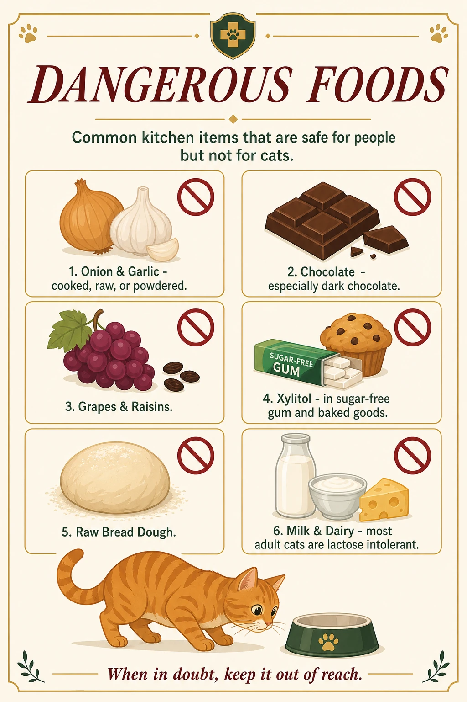
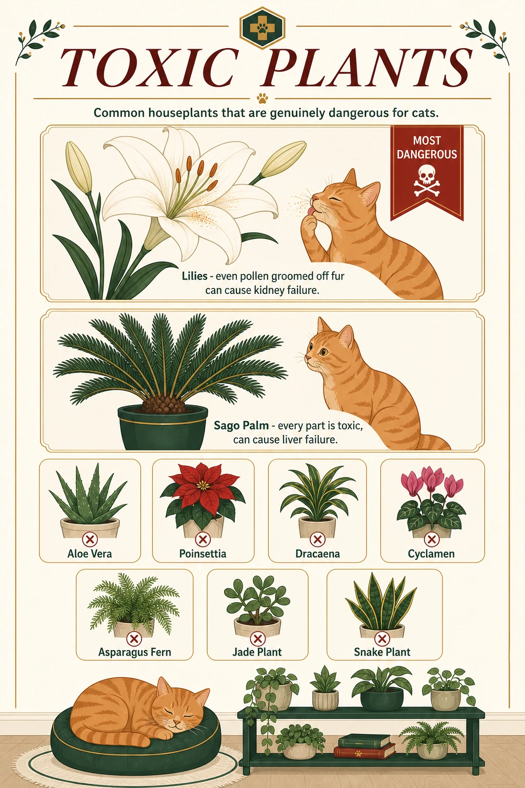

24-Hour Emergency Vets (Singapore)
Advanced VetCare (Bedok)
26 Jln Pari Burong · +65 6636 1788
Westside Vet Emergency & Referral
86 Serangoon Garden Wy · +65 6931 0095
VES Hospital @ Whitley
232 Whitley Rd · +65 6266 0232
Beecroft Animal Specialist & Emergency
991E Alexandra Rd, #01-27 · +65 6996 1812
Signs You Need a Vet Now
Go Immediately
Use this when you need a fast yes-or-no check before deciding whether to leave now.
![Signs You Need a Vet Now infographic: Cats hide illness well, so these signs mean go now, not tomorrow. Warning signs shown are 1) difficulty breathing, open-mouth breathing, or panting, never normal in a cat, 2) straining to urinate with little or no output, or crying in the litter box, 3) a seizure lasting more than 2-3 minutes, or more than one in a day, 4) collapse, unresponsiveness, or inability to stand or walk normally, 5) uncontrolled bleeding, or pale, white, or blue-tinged gums, 6) a hard, swollen, painful abdomen, 7) known or suspected poisoning, and 8) any trauma such as being hit by a car, a fall, or an animal attack, even if the cat seems fine afterward. Bottom reminder: when in doubt, call a clinic and describe what you're seeing, because they can tell you whether to come in immediately.](images/care-guide/infographics/vet-now-guide.webp)
Airway Emergency
Choking Response
Check the mouth first, act only if it is safe, and do not delay transport trying to do it perfectly.
![Choking — Heimlich Maneuver infographic: 1) check the mouth for a visible object and sweep it out with one finger, 2) give 3–5 abdominal thrusts holding the cat upright against your chest, 3) recheck the mouth, 4) if thrusts don't work use firm back blows between the shoulder blades, 5) get to a vet immediately either way. Includes guidance for when you're scared or inexperienced: call a vet with speaker on, delegate tasks if someone's near, only act if it's safe, and don't delay transport trying to perfect the technique.](images/care-guide/infographics/choke-guide.webp)
Life Support
CPR Basics
Only start when the cat is unresponsive with no normal breathing, and keep moving toward a vet while you do it.
![CPR — Cardiopulmonary Resuscitation infographic: compression rate 100–120/min, compression depth ⅓–½ chest width, 30 compressions to 2 breaths. Steps: 1) confirm unresponsiveness, no breathing, no heartbeat, 2) clear the airway, 3) chest compressions lying on its side thumb over the heart, 4) rescue breaths into the nose every 30 compressions, 5) repeat and reassess every 2 minutes. Signs of life to stop CPR: breathing, heartbeat, movement, gum color returning to normal. When to skip CPR: if the cat is already breathing, if unsure of a heartbeat start CPR while someone calls the vet, and if truly alone prioritize getting to the vet over CPR.](images/care-guide/infographics/cpr-guide.webp)
Cross-checked against PetMD and American Red Cross pet first-aid guidance — not a substitute for a hands-on pet CPR course. If in doubt, call one of the numbers above immediately; some clinics can talk you through it live.
If You Suspect Poisoning
Do Not Wait
Bring the evidence, rinse exposed fur or skin, and go before symptoms have time to escalate.
![If You Suspect Poisoning infographic: do not induce vomiting unless a vet or poison control specifically tells you to. Steps shown are 1) bring the evidence, including packaging, the plant, or a sample of what was eaten, 2) rinse exposed skin or fur with running water for about 15 minutes if the substance touched the cat, 3) call your regular vet first if reachable, otherwise go straight to a 24-hour clinic, and 4) go now instead of waiting for symptoms to appear. Common causes shown include toxic plants, human medication, rodent bait, and household chemicals.](images/care-guide/infographics/poison-guide.webp)
Dangerous Foods
Home Risks
Kitchen items cause a lot of preventable emergencies, so this is the quick keep-away list.

Toxic Plants
Home Risks
Lilies are the biggest red flag here, but the whole list is worth checking against your home.
